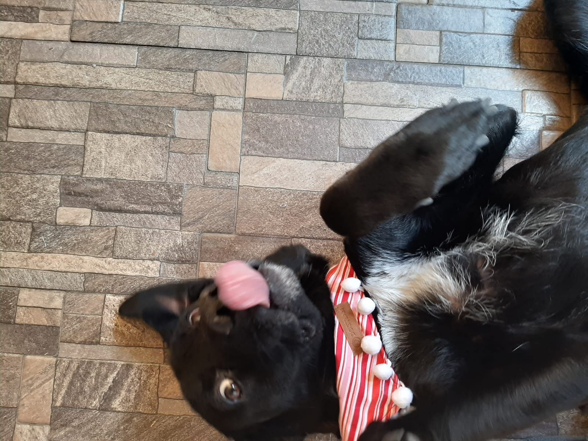
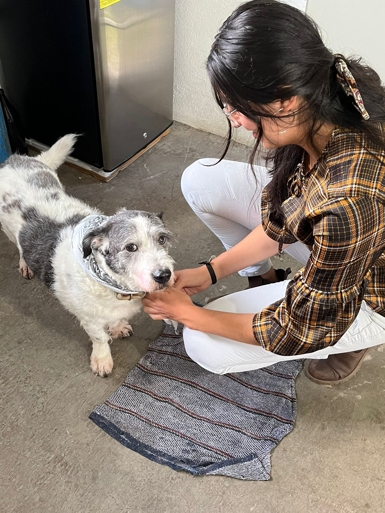
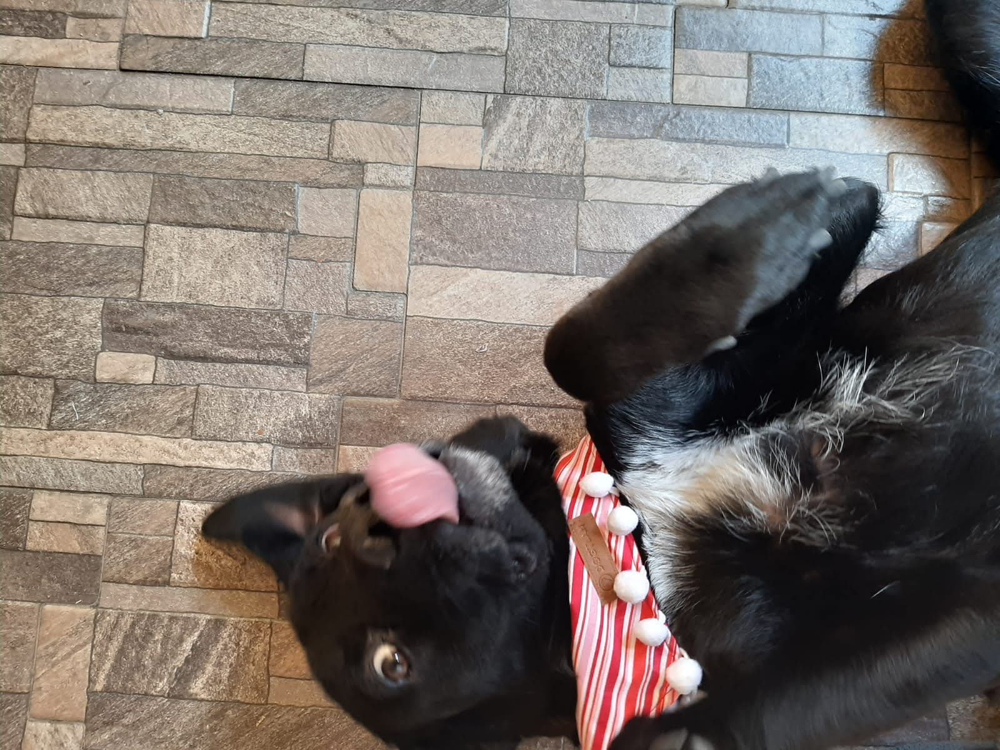
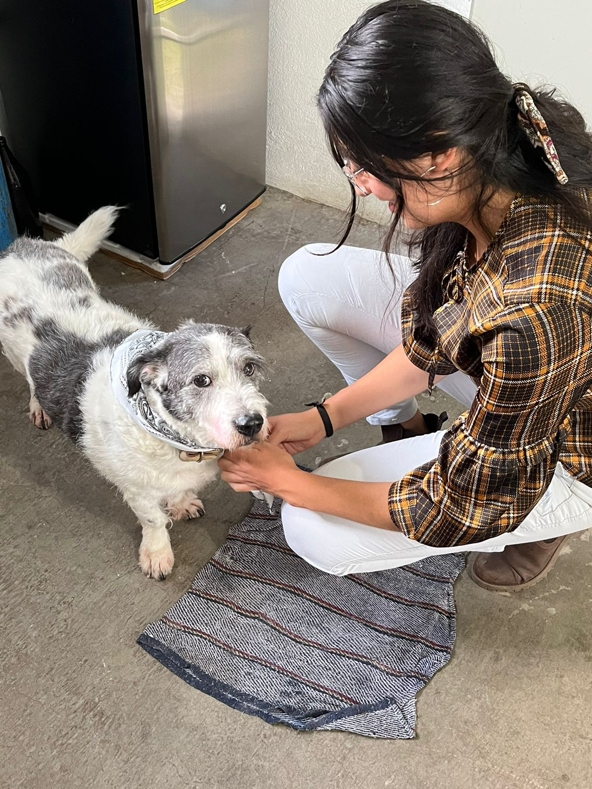

Listas de su top de actividades
3 cosas que Sky amaaaaa
- Salir a correr
- Hacer la meme
- Echar chisme
3 cosas que Sebas amaaaa
- Salir a echar la firma
- Usar sus botas
- Pasear en carro
Mi top de actividades porque los quiero mucho
- Abrazarlos
- Premiarlos con collares

 


